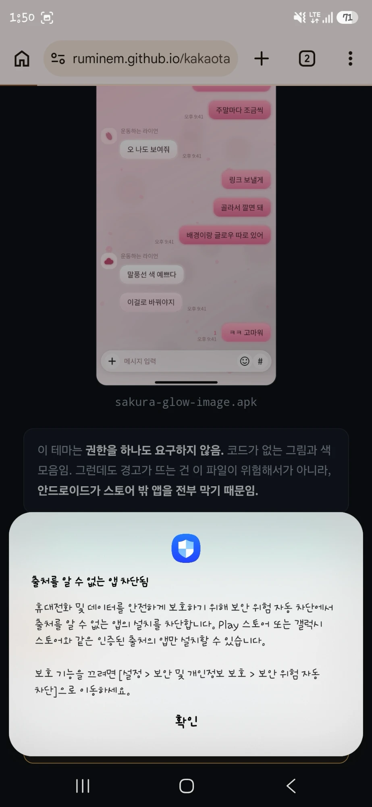
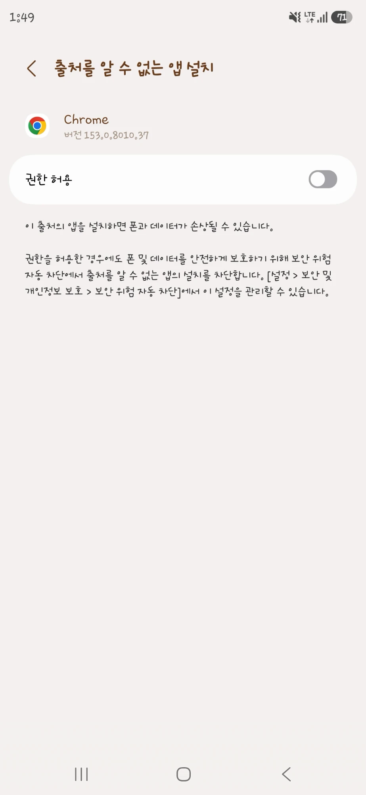

<!doctype html>
<html lang="ko"><meta charset="utf-8">
<title>안드로이드 설치</title>
<meta name="viewport" content="width=device-width, initial-scale=1">
<!--
  README 와 카테고리 문서의 Android 링크가 여기로 들어온다. `?f=<파일이름>.apk`.

  iOS 의 share.html 과 짝이다. 저쪽은 "어떻게 보낼까" 를 고르지만 이쪽은 "받기 전에
  무엇을 해둬야 하는가" 를 알린다. 안드로이드는 받는 것이 아니라 **까는 것**이 막힌다.

  막는 것이 둘이고 성격이 다르다.

  1) 보안 위험 자동 차단 (Auto Blocker) — 삼성 One UI 6(안드로이드 14)부터. 켜져 있으면
     공식 스토어가 아닌 출처는 전부 막는다. 2) 를 켜도 소용이 없다.
     **One UI 6.1.1 부터 기본값이 켜짐이다.** 그래서 요즘 갤럭시는 사는 순간부터 막혀 있다.
  2) 출처를 알 수 없는 앱 설치 — 안드로이드 8 부터. 설치를 거는 앱(브라우저)마다 따로 켠다.

  전에는 README 가 릴리스 자산을 바로 가리켰다. 받는 데까지는 되지만 거기서 끝났다 —
  누르면 차단 안내가 뜨고, 그 자리에서 대부분 그만둔다. 그래서 **받기 전에** 준비를
  끝내게 순서를 뒤집었다.

  1) 을 끄라고 시키는 것은 보이스피싱이 시키는 것과 모양이 같다. 그래서 왜 안전한지를
  먼저 말하고(권한 0개), 받은 뒤에 **다시 켜라**는 안내를 접지 않고 크게 둔다.
  끄는 법만 적고 끝내지 않는다.

  카카오톡 인앱 브라우저는 .apk 를 못 받는다. 거기서는 아무것도 보여주지 않고 밖으로
  내보낸다 — make.html 이 커스텀 테마에서 같은 것을 한다.

  이 파일은 손으로 쓴다. 같은 폴더의 index.html 과 themes/*.md 는 tools/preview.py 가
  만드는 생성물이지만 이 파일은 아니다.
-->
<style>
  /* 색은 docs/index.html · share.html 과 같은 값이다. 사이트가 한 덩어리로 보여야 한다. */
  :root {
    --bg:#0f1115; --surface:#151922; --line:#232833;
    --text:#e6e9ee; --dim:#8b95a3; --accent:#4FD1B0; --on-accent:#0b1a16;
    --warn:#F0B45E;
  }
  * { box-sizing: border-box; }
  body { margin:0; padding:32px 20px 48px; background:var(--bg); color:var(--text);
         font:15px/1.65 -apple-system,BlinkMacSystemFont,'Segoe UI','Malgun Gothic',sans-serif;
         -webkit-text-size-adjust:100%; }
  main { max-width:360px; margin:0 auto; display:flex; flex-direction:column;
         gap:18px; align-items:stretch; }
  h1 { font-size:19px; margin:0; text-align:center; }
  .name { font-size:12.5px; color:var(--dim); text-align:center; margin:-10px 0 0;
          font-family:ui-monospace,SFMono-Regular,Consolas,monospace; word-break:break-all; }
  img.shot { width:100%; max-width:200px; margin:0 auto; display:block;
             border-radius:12px; border:1px solid var(--line); }
  .safe { background:var(--surface); border:1px solid var(--line); border-radius:11px;
          padding:13px 15px; font-size:13.5px; color:var(--dim); margin:0; }
  .safe b { color:var(--text); font-weight:600; }

  /* 단계. 번호를 크게 둬서 "둘만 하면 된다" 가 한눈에 보이게 한다. */
  .step { background:var(--surface); border:1px solid var(--line); border-radius:11px;
          padding:14px 15px; margin:0; }
  .step h2 { font-size:14.5px; margin:0 0 7px; display:flex; align-items:baseline; gap:8px; }
  .step h2 span.n { color:var(--accent); font-family:ui-monospace,monospace; font-size:13px; }
  .step h2 em { font-style:normal; font-size:11.5px; color:var(--dim); font-weight:400;
                margin-left:auto; white-space:nowrap; }
  .path { font-size:13px; color:var(--text); background:var(--bg); border:1px solid var(--line);
          border-radius:8px; padding:9px 11px; margin:8px 0 0; word-break:keep-all; }
  /* 폰에서 찍은 세로 화면이라 폭을 맞추면 한 장이 화면을 다 먹는다. 작게 두고 누르면
     원본이 열리게 한다 — 여기서는 "아 이 창" 하고 알아보는 것이 할 일이다. */
  figure { margin:10px 0 0; text-align:center; }
  figure img { width:100%; max-width:132px; display:block; margin:0 auto;
               border-radius:9px; border:1px solid var(--line); }
  figcaption { font-size:11.5px; color:var(--dim); margin-top:5px; }
  .step p { margin:7px 0 0; font-size:13px; color:var(--dim); }
  .step p b { color:var(--text); font-weight:600; }
  .mine { border-color:var(--accent); }
  .mine h2 em { color:var(--accent); }

  label.gate { display:flex; gap:10px; align-items:flex-start; cursor:pointer;
               font-size:14px; padding:2px; }
  label.gate input { width:20px; height:20px; margin:1px 0 0; flex:none; accent-color:var(--accent); }

  button, a.btn {
    display:block; text-align:center; text-decoration:none;
    font:16px/1 inherit; font-family:inherit; padding:15px; width:100%;
    border-radius:11px; cursor:pointer; transition:opacity .12s ease;
    border:1px solid var(--line); background:var(--surface); color:var(--text);
  }
  a.btn.primary, button.primary { font-weight:700; border-color:var(--accent);
                   background:var(--accent); color:var(--on-accent); }
  button:disabled, a.btn.off { opacity:.4; cursor:default; pointer-events:none; }
  button:focus-visible, a.btn:focus-visible { outline:2px solid var(--accent); outline-offset:3px; }
  @media (prefers-reduced-motion: reduce) { button, a.btn { transition:none; } }

  /* 되돌리기 안내. 받은 뒤에 뜨고, 접지 않는다. */
  .back { border:1px solid var(--warn); border-radius:11px; padding:14px 15px; margin:0;
          background:rgba(240,180,94,.07); }
  .back h2 { font-size:14.5px; margin:0 0 7px; color:var(--warn); }
  .back p { margin:7px 0 0; font-size:13px; color:var(--dim); }
  .back p b { color:var(--text); font-weight:600; }

  .hint { color:var(--dim); font-size:12.5px; text-align:center; margin:-8px 0 0; }
  .alt { text-align:center; font-size:13px; margin:0; }
  a { color:var(--accent); }
  .msg { text-align:center; font-size:13.5px; color:var(--dim); min-height:1.4em; margin:0; }
  .hide { display:none; }
</style>

<main id="app">
  <noscript><p class="alt">자바스크립트가 꺼져 있음.
    <a href="https://github.com/Ruminem/kakaotalk-theme/releases/latest">릴리스에서 받기</a></p></noscript>
</main>

<script>
(function () {
  var app = document.getElementById('app');
  var RELEASE = 'https://github.com/Ruminem/kakaotalk-theme/releases/latest/download/';
  var LATEST = 'https://github.com/Ruminem/kakaotalk-theme/releases/latest';
  // 준비를 마쳤다는 표시. 292벌 중 여럿을 받는 사람에게 같은 안내를 매번 시키지 않는다.
  var READY = 'kt-android-ready';

  // 파일 이름은 생성된 슬러그(소문자·하이픈)뿐이다. share.html 과 같은 기준으로 좁힌다 —
  // 주소창의 문자열이 그대로 링크가 되는 자리다.
  // `?f=` 없이 열면 받을 파일 없이 안내만 보여준다. make.html 이 여기로 보낸다 — 거기서
  // 만든 테마는 브라우저 안에서 나오는 것이라 가리킬 파일 이름이 없다. 같은 안내를 두 군데
  // 적으면 한쪽만 고쳐져 갈라지므로 문장은 이 파일에만 둔다.
  var f = new URLSearchParams(location.search).get('f') || '';
  var guideOnly = !f;
  if (!guideOnly && !/^[a-z0-9]+(-[a-z0-9]+)*\.apk$/.test(f)) { location.replace(LATEST); return; }
  var slug = guideOnly ? '' : f.slice(0, -'.apk'.length);
  var apkUrl = guideOnly ? '' : RELEASE + f;

  var ua = navigator.userAgent;
  var android = /Android/i.test(ua);

  // 카카오톡 인앱 브라우저(WebView)는 .apk 를 내려받지 못한다. make.html 과 같은 판정이다.
  // 여기서는 아무것도 보여주지 않고 밖으로 내보낸다 — 받아봐야 파일이 안 생긴다.
  if (android && /; ?wv\)|KAKAOTALK/i.test(ua)) {
    app.innerHTML =
      '<h1>다른 브라우저로 열어야 함</h1>' +
      '<p class="safe">카카오톡 안에서는 <b>.apk 를 받을 수 없음.</b> ' +
        '받은 것처럼 보여도 파일이 안 생김.</p>' +
      '<p class="safe">오른쪽 위 <b>⋮</b> → <b>다른 브라우저로 열기</b> 를 누르거나, ' +
        '아래에서 주소를 복사해 <b>크롬</b>·<b>삼성 인터넷</b> 에 붙여넣기.</p>' +
      '<button class="primary" id="copy">이 페이지 주소 복사</button>' +
      '<p class="msg" id="msg"></p>';
    document.getElementById('copy').addEventListener('click', function () {
      var m = document.getElementById('msg');
      var url = location.href;
      if (navigator.clipboard && navigator.clipboard.writeText) {
        navigator.clipboard.writeText(url).then(function () {
          m.textContent = '복사했음. 다른 브라우저 주소창에 붙여넣기.';
        }, function () { m.textContent = url; });
      } else {
        m.textContent = url;   // 복사가 막힌 자리에서는 눈으로 보고 옮길 수 있게 띄운다
      }
    });
    return;
  }

  // 삼성 기기 모델 코드. 크롬으로 열어도 UA 에 남는다. 맞히면 1번을 강조하고,
  // 못 맞혀도 두 단계를 다 보여주므로 손해가 없다.
  var samsung = /SM-[A-Z0-9]/i.test(ua) || /SamsungBrowser/i.test(ua);

  // 안드로이드가 아니면 여기 올 일이 없다. 그래도 들어왔으면 파일만 준다.
  if (!android) { location.replace(guideOnly ? LATEST : apkUrl); return; }

  // 안내만 보여주는 자리에서는 건너뛸 단계가 없다. 늘 펼쳐 둔다.
  var ready = false;
  if (!guideOnly) { try { ready = localStorage.getItem(READY) === '1'; } catch (e) {} }

  app.innerHTML =
    '<h1>안드로이드 설치 준비</h1>' +
    (guideOnly ? '' :
      '' +
      '<p class="name">' + f + '</p>') +

    '<p class="safe">이 테마는 <b>권한을 하나도 요구하지 않음.</b> 코드가 없는 그림과 색 모음임. ' +
      '그런데도 경고가 뜨는 건 이 파일이 위험해서가 아니라, <b>안드로이드가 스토어 밖 앱을 ' +
      '전부 막기 때문임.</b></p>' +

    (ready ? '' :
      '<div class="step' + (samsung ? ' mine' : '') + '">' +
        '<h2><span class="n">1</span>보안 위험 자동 차단 끄기' +
          '<em>' + (samsung ? '내 폰이 삼성' : '삼성 갤럭시') + '</em></h2>' +
        '<p class="path">설정 → 보안 및 개인정보 보호 → <b>보안 위험 자동 차단</b> → 끔</p>' +
        '<p>One UI 6.1.1 부터 <b>기본이 켜짐</b>이라 요즘 갤럭시는 대부분 켜져 있음. ' +
          '켜져 있으면 2번을 해도 설치가 막힘.</p>' +
        '<figure><a href="../assets/install-autoblock.webp" target="_blank">' +
          '' +
        '</a><figcaption>이 창이 뜨면 이것임. <b>확인</b> 말고는 단추가 없어서 ' +
          '여기서 설정으로 바로 못 감 — 직접 찾아가야 함 (눌러서 크게)</figcaption></figure>' +
      '</div>' +

      '<div class="step">' +
        '<h2><span class="n">2</span>출처를 알 수 없는 앱 허용<em>모든 안드로이드</em></h2>' +
        '<p class="path">설정 → 보안 및 개인정보 보호 → 기타 보안 설정 → ' +
          '<b>출처를 알 수 없는 앱 설치</b></p>' +
        '<p>목록에서 <b>쓰던 브라우저</b>(크롬 · 삼성 인터넷)를 골라 <b>권한 허용</b>을 켬. ' +
          '받을 때 쓴 그 브라우저여야 함 — 앱마다 따로 켜는 것이라 다른 것을 켜면 안 먹음.</p>' +
        '<figure><a href="../assets/install-unknown.webp" target="_blank">' +
          '' +
        '</a><figcaption>이 화면에도 <b>「허용해도 자동 차단이 막는다」</b>고 적혀 있음. ' +
          '1번을 안 하면 여기만 켜도 소용없음 (눌러서 크게)</figcaption></figure>' +
      '</div>' +

      (guideOnly ? '' :
        '<label class="gate"><input type="checkbox" id="gate">' +
          '<span>위 준비를 마쳤음. 다음부터는 안 물어봐도 됨</span></label>')) +

    (guideOnly ? '' :
      '<a class="btn primary' + (ready ? '' : ' off') + '" id="get" href="' + apkUrl +
        '" download>테마 파일 받기</a>' +
      (ready ? '<p class="hint">준비는 전에 끝냈음. 바로 받으면 됨</p>' : '')) +

    '<div class="back' + (guideOnly ? '' : ' hide') + '" id="back">' +
      '<h2>설치가 끝나면</h2>' +
      '<p><b>보안 위험 자동 차단을 다시 켜 주세요.</b> 1번에서 껐다면 그 자리에서 다시 켬. ' +
        'One UI 8.5 부터는 30분 뒤 저절로 켜지는 설정도 있음.</p>' +
      '<p>테마 적용 — 카카오톡 → <b>더보기</b> → <b>설정</b> → <b>테마 설정</b></p>' +
    '</div>' +

    '<p class="alt"><a href="' + LATEST + '">릴리스에서 직접 받기</a></p>';

  var get = document.getElementById('get');
  var gate = document.getElementById('gate');
  var back = document.getElementById('back');

  if (gate && get) {
    gate.addEventListener('change', function () {
      get.classList.toggle('off', !gate.checked);
      try { localStorage.setItem(READY, gate.checked ? '1' : '0'); } catch (e) {}
    });
  }

  // 되돌리기 안내는 받은 뒤에 띄운다. 처음부터 보이면 준비 단계와 섞여 읽힌다.
  // 안내만 보여주는 자리에는 받을 것이 없어서 처음부터 펼쳐져 있다.
  if (get) {
    get.addEventListener('click', function () {
      back.classList.remove('hide');
      back.scrollIntoView({ block: 'nearest' });
    });
  }
})();
</script>
</html>
